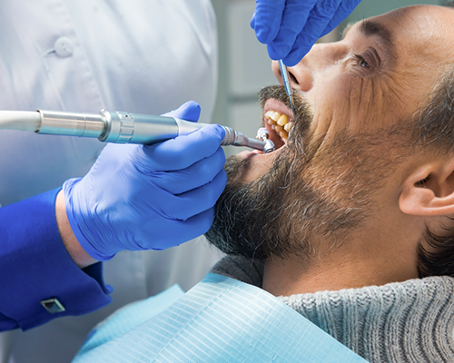
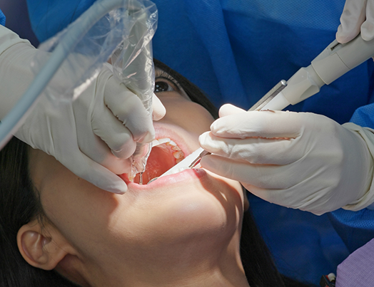
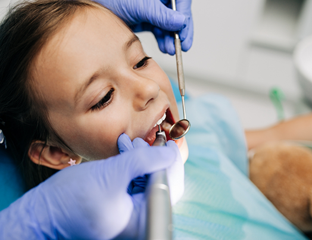
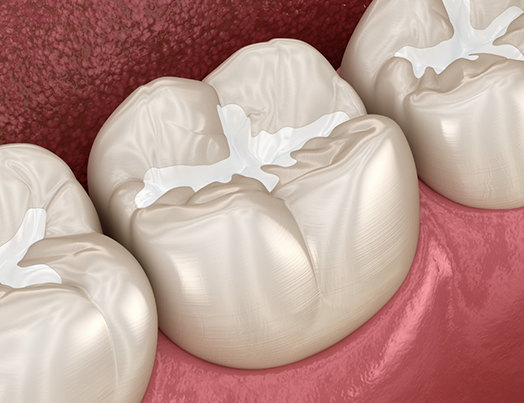
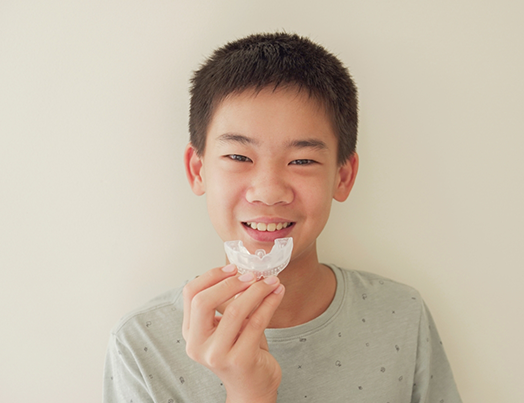
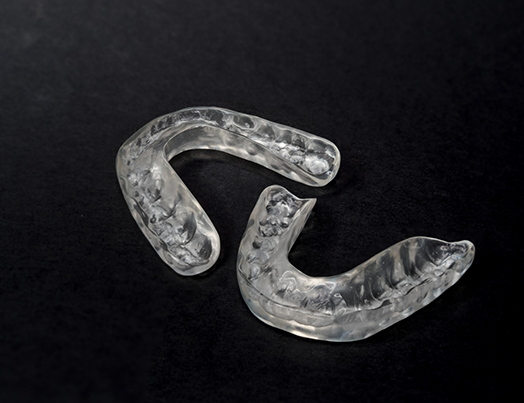

Preventive Dentistry Wichita
The Secret to Maintaining a Problem-Free Smile
Even if you have excellent oral hygiene habits at home, did you know that it still isn’t enough to fully protect your smile and thwart all dental issues? However, routine preventive care ensures that your smile is safe from all threats. That’s why our office puts so much emphasis on these regular checkups; their value is immeasurable! If it’s been more than six months since your last checkup, don’t wait to contact our Wichita office to schedule your next appointment.
Why Choose R2 Center for Dentistry for Preventive Dentistry?
- Sedation Options Available for Nervous Patients
- Patients of All Ages Proudly Welcome
- Oral Cancer Screenings with Every Checkup
Dental Checkups & Cleanings

Regular dental checkups and cleanings are essential for maintaining a healthy smile and catching issues before they become serious. During your visit, our team will gently remove plaque and tartar buildup, polish your teeth, and check for signs of cavities and gum disease. We also provide thorough oral cancer screenings, carefully examining your mouth for any abnormalities that may require further attention. These preventive visits not only keep your teeth and gums strong but also support your overall health; plus, you’ll have the opportunity to ask us any questions you have about caring for your smile on your own.
Gum Disease Treatment

Gum disease often begins with plaque and tartar buildup beneath the gum line, leading to inflammation, bleeding, and, if left untreated, potential tooth loss. This means timely treatment is a must, and our office provides effective gum disease treatment using a popular method known as scaling and root planing. Scaling removes harmful bacteria from the tooth surfaces, both above and below the gumline, while planing smooths the roots to help the nearby gums reattach and begin healing. This non-surgical treatment is proven to halt the progression of gum disease, setting your future oral health up for success.
Children’s Dentistry

Our practice is proud to provide gentle, compassionate dental care tailored to children of all ages. From routine checkups and cleanings to preventive treatments like fluoride, mouthguards, and sealants, we work diligently to protect your child’s developing smile and aim to help them establish healthy habits. We also take the time to educate children and parents on proper oral hygiene, making dentistry a little more fun while also building a strong foundation for lifelong oral health.
Fluoride Treatment
Fluoride treatments are simple yet highly effective ways of strengthening your teeth and preventing cavities. Fluoride works by remineralizing weakened enamel, making it more resistant to decay caused by acids and bacteria. At our practice, we provide professional fluoride applications that deliver a higher level of protection than over-the-counter products, especially for patients who are more prone to cavities. The process is also surprisingly quick, painless, and safe for both children and adults.
Dental Sealants

Dental sealants are a highly effective preventive treatment designed to protect especially vulnerable teeth from cavities and decay. Applied as a thin, protective coating to the chewing surfaces of the back teeth, sealants act as a barrier against food particles and bacteria that can get trapped in the deep grooves and crevices of molars. This quick, painless treatment is especially beneficial for children and teens, but adults can also enjoy the long-lasting protection sealants provide.
Athletic Mouthguards/ Sportsguards

Unlike store-bought options, a professionally fitted athletic mouthguard from our office offers superior comfort, durability, and protection, since it’s molded precisely to fit your unique teeth and bite. Whether you play contact sports like hockey or football or engage in other physical activities where accidents can happen, a mouth guard helps prevent broken teeth, jaw injuries, and soft tissue damage. You’d be surprised at how often these handy little appliances are able to help prevent serious dental emergencies!
Nightguards for Bruxism

We offer custom-made nightguards to protect your teeth from the effects of bruxism, or teeth grinding. Many people grind or clench their teeth at night without even realizing it, which can lead to jaw pain, headaches, worn-down enamel, and even cracked teeth. However, a professionally fitted nightguard provides a comfortable barrier between your teeth, reducing strain on your jaw and preventing long-term dental damage. Our team also ensures each guard is tailored to your bite for maximum comfort and protection.